tankzim2000 The window and replay
Decided 1
The window's starting sizeDecided
Decided, not built: the window starts at a size taken from the display (about four fifths of it) and remembers the size it was closed at. Today it starts at 1280 by 800, small on a 2560 by 1440 display.
Question: Should the window start bigger, or remember the size it was last closed at?
Options
✓Start bigger
About four fifths of the display, instead of a fixed 1280 by 800.
Why: Chosen on 2026-11-11, the recommendation.
✓Remember the size
The window opens at the size it was last closed at.
Why: Chosen on 2026-11-11, the recommendation.
Facts
| stated | The window starts at 1280 by 800. | src/gui.rs window_width, window_height |
Code
src/gui.rs: run
Open
- Where the remembered size is kept (a file beside the program or in the user's config directory).
Built 42
Version 0.31.3 1
The crew bails out of a knocked-out tank, in the pictureBuilt0.31.3
Built 0.31.3 (G7 step 1): zoomed in, where the tanks are drawn as models, the men who got out of a knocked-out tank (the sign was crew bailed out or burning; every man not killed, the wounded too) climb out one after another, run a short way to the rear of the turret, the wounded crawling slower, and lie down; after about 20 seconds they fade. The killed stay inside and are not drawn. The paths come from a seed, the same every time; the engine knows when, how many, who is wounded and where the turret pointed, and the picture invents only where exactly the men run. In a side's view the own men always show, an enemy's only if someone on the side saw the crew bail out or the tank burn.
Question: How far should the picture go in showing a crew that bails out?
Options
✓The men run a short way from a seed and lie down, then fade
Why: Everything they show is known to the engine but the exact path; they fade before they seem to do something the engine does not know.
The men only stand in the lee of the wreck and fade
Why: Stricter, but shows less than the engine knows (the wounded, the order they come out in).
The engine models the men outside the tank
Why: The way to go in the long run (crew-thought-men-outside-the-tank), but a simulation step, not G7.
Facts
| observed | The men not killed get out when the tank's first sign after the knock-out is crew bailed out or burning; a silent wreck keeps them inside. | src/summary.rs: fates |
| DESIGN_CHOICE | The men run to the rear of the turret rather than away from the shooter: the turret's heading is seen by anyone who sees the tank, while the shooter's place may be unknown to the side that was hit, and the picture must not tell it. | the chat, 2026-11-19 |
| observed | Only the first sign after the knock-out lets the men out: a silent wreck shot into burning later keeps them inside, and a crew that bailed out does not bail out again. Found in review, when a look at the last seconds only missed the knock-out; a test holds it. | src/draw.rs: bailed_out_view |
| observed | At the zoom a double click on a tank gives, the men are a few pixels each: readable as men leaving the wreck, not as figures. | gui two_vs_two --seed 1, tick 16, 2026-11-19 |
Code
src/draw.rs: bailed_out_mensrc/draw.rs: bailed_out_viewsrc/draw.rs: picture_seedsrc/draw.rs: wreck_history
Open
- The timings (one man about every second, run 3 m/s, crawl 0.5 m/s, 15-25 m, 20 s, fade over the last 4 s) are MOCK.
Pictures

Version 0.31.2 1
A wreck's panel shows what became of it and the menBuilt0.31.2
Reported as a bug by a tester: a knocked-out tank showed Calm stress. Selecting a knocked-out tank shows Destroyed with the round and time and its knock-out sign (burning, crew bailed out, silent), and one line per man: killed, wounded or fit, bailed out or inside. The frozen combat values (stress, ammunition, hatch, reload, mobility, behaviour) are not shown on a wreck. An enemy in a side's view cannot be selected, so the side learns nothing more than its list and map show.
Question: What should the panel show for a knocked-out tank, whose stress and other values froze when it was hit?
Options
✓Destroyed and the crew's fate
The condition with when and how, and each man's fate as the report has it; the frozen rows hidden.
Why: The frozen stress read as the crew's mood now: a wreck shown as Calm.
Facts
| stated | Reported as a bug by a tester: the panel of a destroyed tank said Stress: Calm. | the chat, 2026-11-19 |
| observed | A wreck's stress stops changing when it is knocked out, and the shot that knocks it out never raises it, since stress comes last in the tick: a tank knocked out by its first hit stays Calm. | src/engine.rs: stress_after |
| observed | The men not killed bail out when the tank's first sign after the knock-out is crew bailed out or burning; a silent wreck keeps them inside. The report and the panel use the same rule. | src/summary.rs: fates |
| DESIGN_CHOICE | A man who stayed in the tank now reads "fit, inside" or "wounded, inside", in the panel and in the report alike. | src/report.rs: crew_fate_text |
Code
src/gui.rs: unit_panelsrc/draw.rs: wreck_historysrc/summary.rs: fatessrc/report.rs: crew_fate_text
Pictures
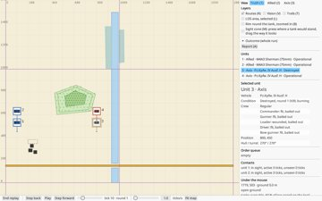
Version 0.31.1 1
Clearer contour lines when zoomed inBuilt0.31.1
Built 0.31.1: zoomed in, from the detail zoom (3 px/m, where the ground's detail shows), thin 1 m contour lines come up under the 5 m and 25 m ones, a shade fainter, so a low ridge shows; zoomed out (the map sheet, the PNGs, the report) nothing changes. A level that is also a 5 m level is drawn once, as the 5 m line. Worked out once per map (14 ms on Le Mesnil-Patry). The CPU and the GPU draw the same lines. The style is MOCK.
Question: When do the 1 m contour lines show?
Options
✓Automatically from the detail zoom, no setting
Why: Chosen 2026-11-16, the recommendation: one zoom says "zoomed in", as for the ground's detail.
Facts
| observed | Today the contour lines are 5 m apart. A 0.9 m ridge in the valley scenario lies between two lines and is not seen on the map. | SESSION.md, TODO on the contour lines (2026-11-08) |
Code
src/map.rs: fine_contourssrc/map.rs: FINE_CONTOUR_Msrc/draw.rs: draw_list
Pictures
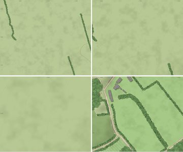
Version 0.31.0 1
Each field its own tone, pattern and directionBuilt0.31.0
Built 0.31.0 (G6): zoomed in, every field area has a land use drawn once from a seed of its outline (pasture 50 %, meadow 20 %, arable 30 %, MOCK), and the scenario's month decides how it looks: pasture plain all year; meadow with mown swaths (uneven, soft) from April to July, plain after; arable as growing cereal with drilled rows from April to July, ripe or harvested in August, stubble from September to November, winter ground from December to March. The lines follow the field's longest side (80 %, else across it) within 5 degrees. Each field gets its own shade inside "field", and a test keeps every shade at least 12 apart from open ground, ploughed ground, mud, marsh, sand and gravel in every month, which also settles February's open ground and field being too close (G3). The CPU and the GPU draw from the same look and lines. All colours and figures MOCK.
Question: How do the fields differ from each other?
Options
✓A land use per field from a seed, its look by the month; lines along the long side; a shade of its own
Why: Chosen 2026-11-16, points 1-5; the land use held through the months after the first screenshots.
Facts
| observed | The closest a field shade comes to another ground kind is stubble in October, 13.3 from open ground (limit 12). | src/detail.rs every_shade_a_field_can_get_keeps_apart_from_the_other_ground_in_every_month, 2026-11-16 |
Code
src/detail.rs: field_looksrc/detail.rs: field_linessrc/detail.rs: LandUsesrc/ground_gpu.rs: DetailPlan
Open
- The crop shares and colours are MOCK until a source for the Bessin in 1944 is found.
Pictures

Version 0.30.3 1
Zoom from the map sheet down to the groundBuilt0.30.3
Built 0.30.0 (G4): the window's main view is the map sheet zoomed out (paper, conventional signs, contours with their figures, the grid) and the ground's detail zoomed in (washes, mottle, crowns, roofs, verges), both on the GPU. Between 1 and 3 px/m the sheet fades over the ground, evenly in the zoom (linear in its logarithm), as in the goal sketch. Both are built when the map is first drawn. The units keep their badge below 3 px/m and their model from 3. The topo look stays for the PNGs and --layers; with the key P tiny-skia draws it all with a hard switch at 3 px/m. From 0.30.1 the units follow the fade too: across the band a tank's badge glides down its stem onto the vehicle, and the frame, the stem and the small copy inside fade with the sheet, gone at 3 px/m where the badge used to vanish at once; the vehicle at true size stays. From 0.30.3 the vehicle is always in its own paint with its nation's mark, badge or not, so the badge alone carries the side's colour, and the unit's number glides with the fade from the badge's corner to beside the vehicle: nothing changes at once at 3 px/m.
Facts
| observed | The sheet's ground on the GPU against tiny-skia: 1.03 % of the pixels differ by more than 8 at 0.5 px/m on Le Mesnil-Patry, from strokes under 1 px drawn a shade darker as a 1 px strip than as tiny-skia's hairline; the test's limit for the sheet is 1.5 %. | src/files.rs the_mesh_sheet_ground_is_the_same_picture_as_tiny_skias, 2026-11-15 |
Code
src/draw.rs: fadesrc/gui/gpu_map.rs: GpuMapsrc/gui.rs: number_at
Open
- The band's ends (1 and 3 px/m) are MOCK.
Pictures
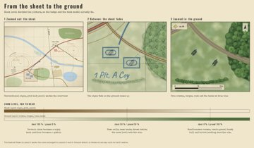


Version 0.30.2 2
The start menu's tree, first branchesBuilt0.30.2
Built 0.30.2, the first branches of the tree in gui-main-menu-tree: Singleplayer > Scenario (only the playable scenarios on a real map, grouped by the map's name and version), Replays, Docs (the manual beside the program, and the changelog on the project's site, opened in the browser), Test grounds (closed) and About with the licence and the credits from each map.json, the Noto fonts' OFL and the Rust libraries. Entries that do not work yet are not shown.
Question: Which branches of the tree are built first?
Options
✓Singleplayer first, then Docs
Why: Chosen 2026-11-15: what a friend needs to play and to read about the game.
Code
src/gui.rs: run_menusrc/gui.rs: play_gridsrc/gui.rs: about_pagesrc/files.rs: map_credits
Pictures

Version 0.29.1 1
The map drawn on the GPU with macroquad meshesBuilt0.29.1
Built 0.28.0 (G4 step 1): below the detail zoom (3 px/m) the window draws the whole background on the GPU: terrain, hatching, relief, contours and grid, tessellated once per map by lyon into GPU buffers, lines kept at their pixel width by a small shader. What moves (tanks, routes, LOS, shots) is drawn by tiny-skia on a transparent picture on top. Zoomed in, and with the key P, tiny-skia draws everything as before. The PNGs and the report keep tiny-skia, and a test keeps the two pictures alike. From 0.29.1 the ground's detail is on the GPU too: the washes, roads and roofs as meshes, the mottle as a texture fixed to the world, and the crowns and hedge bushes as sprites from an atlas drawn once by the program (a seam lets the pictures come from files later), placed by the same function as the CPU picture, so the same trees stand in the same places.
Question: How does the window draw the map so the zoom from the sheet to the ground can be smooth?
Options
✓macroquad meshes
The draw list as GPU meshes and textures in today's window; tiny-skia stays for the PNGs and the report.
Why: Chosen 2026-11-15 after two spikes: about 50 times faster on the developer's GPU, nearly the same picture, one small new crate (earcutr), pure Rust, the same on Linux and Windows.
tiny-skia in tiles
Today's renderer in world tiles per zoom level, moved and scaled by the GPU.
Why: Not chosen: the pixels stay on the CPU, and two layers for the fade cost twice.
Skia (skia-safe) on GL and raster
One engine for window, PNG and report through Skia's canvas.
Why: Not chosen now: a C++ dependency, GL state shared by hand with miniquad, harder to build for Windows from Linux and its own code for Metal on macOS. Kept as a thought (gui-other-window-shells).
Bevy or eframe as the window
Another shell around the engine.
Why: Not chosen now; kept as a thought (gui-other-window-shells).
Facts
| observed | The first real map, Le Mesnil-Patry 0.2.0 (175 terrain features, 2 386 corners, a 218 by 221 height layer), was not heavy to draw in today's window on the developer's machine; the GPU is not needed for it yet. | maps/le_mesnil_patry/view.json in the window, 2026-11-14 |
| observed | Spike on Le Mesnil-Patry, the ground only (287 terrain polygons and the relief), 300 frames panning and zooming from 0.5 to 2.5 px/m at 1280 by 800 on the developer's GPU: tiny-skia 9.9 ms of map drawing and 10.1 ms per whole frame (median); macroquad meshes 0.04 ms and 0.20 ms. Built once in 0.6 ms: 4 381 vertices, 3 803 triangles, the relief a 218 by 221 texture. | TANKZIM_SPIKE bench, src/gui/gpu_spike.rs, 2026-11-15 |
| observed | The two pictures differ in about 1 % of the pixels by more than 8 of 255, at the edges (MSAA 4x against tiny-skia's anti-aliasing); the relief and the colours match. All 287 polygons keep their area when triangulated. | the spike's screenshots and triangulation test, 2026-11-15 |
| observed | G4 step 1 on the developer's GPU, Le Mesnil-Patry with the whole draw list at 1280 by 800: 0.76 ms per whole frame (median, p95 0.81) against 11.6 ms for the tiny-skia path. The meshes: 13 803 vertices, 8 523 triangles, built in 1 ms. The parity test: 0.73, 0.51 and 0.20 % of the pixels differ by more than 8 at 0.5, 1 and 2.5 px/m (limit 1 %). | TANKZIM_BENCH; src/files.rs the_mesh_background_is_the_same_picture_as_tiny_skias, 2026-11-15 |
| observed | The ground's detail of Le Mesnil-Patry on the GPU: 3 832 crowns, 9 986 bushes, 56 roofs and 24 880 verge ticks, 240 615 vertices, built in about 20 ms; zoomed in from 3.5 to 12 px/m in the container (software GL) 3.3 ms of map drawing against 29.8 ms for tiny-skia. | src/ground_gpu.rs, TANKZIM_BENCH_ZOOM=detail, 2026-11-15 |
| observed | On the developer's GPU, zoomed in from 3.5 to 12 px/m on Le Mesnil-Patry: 0.89 ms per whole frame (median, p95 0.98) against 28.5 ms for tiny-skia. | TANKZIM_BENCH_ZOOM=detail, 2026-11-15 |
Code
src/meshes.rs: buildsrc/gui/gpu_map.rs: GpuMapsrc/png.rs: Overlaysrc/ground_gpu.rs: DetailPlansrc/sprites.rs: Atlas
Open
- What moves on the GPU too: the transparent picture on top is most of the 0.57 ms left.
- Strokes with alpha blend twice where a strip overlaps itself at a join (tiny-skia does not); not visible on the maps so far.
- The crowns' and the verges' shadows use the depth buffer so they are laid once; without one (not tried on Windows) they would be laid twice, not crash.
Pictures
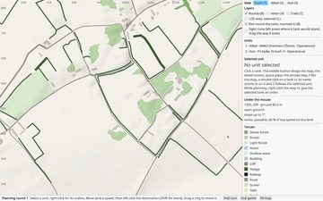

Version 0.29.0 1
The grid stops where the starting view endedBuilt0.29.0
Built 0.29.0 (G4 step 2): below the detail zoom the grid is a layer of its own, drawn by a small shader over the whole view, faint 100 m lines and violet kilometre lines aligned to the sheet's origin, so it goes on wherever the view is panned or zoomed. The edge numbers stand at its lines, in world metres. Zoomed in to the ground's detail the grid goes, as in the goal sketch.
Question: Does the grid follow the view, and does its spacing grow when zoomed out?
Facts
| observed | Reproduced under Xvfb on hill_assault: zoomed out, the grid covers about x 0-2000 and y 0-1700 m, the relief goes on to the window's edges. | src/draw.rs grid; src/gui.rs bounds_of |
Code
src/gui/gpu_map.rs: GpuMapsrc/sheet.rs: grid_lines_in
Open
- The faint 100 m lines fade out below about 8 px apart (DESIGN_CHOICE).
Version 0.25.0 1
Zoomed in, the ground is drawn in ink and washBuilt0.25.0
From 3 px/m, the zoom where the tanks switch from badge to model, the background is drawn in ink and wash on the CPU from the same draw list as the PNG, only inside the view. Each surface kind has its own ground tone, and the scenario's month moves the whole palette (June without a date); a fine mottle is fixed to the world. Forest and dense forest are filled with tree crowns, light forest is sparse, hedges are bushes, buildings have roofs; crowns, bushes and roofs cast shadows from the relief's sun, and deciduous trees are bare in winter. Roads are gravel with an ink edge and a soft verge with grass ticks, drawn as one network so a junction is clean. A tank's trail is two soft ruts at its track width that fade with age. Every effect shows something the engine knows; the placement is seeded and fixed to the world, so nothing moves when the view moves.
Question: How does the ground look zoomed in?
Options
✓Ink and wash, a palette per surface kind and month, crowns, verges and ruts, from 3 px/m and in the PNG
—
Facts
| observed | Time to draw a fresh background on Le Mesnil-Patry at 1600x1000: 15-21 ms before G3 at every zoom; after G3 about 18-22 ms under 3 px/m and 32-34 ms from 3 px/m. The kept background, which is what most frames use, is 0.1-0.2 ms before and after. | src/files.rs background_draw_time_le_mesnil_patry, 2026-11-14 |
| DESIGN_CHOICE | The ruts are wider than the track: three stacked soft strokes, the outermost about 2.8 times the track width, so they read as pressed earth and not as pencil lines; the dark core lies where the tracks ran. | src/detail.rs RUT_BAND |
| MOCK | The palette's anchors (February, June, August, October per surface kind, mixed toward the paper colour), the crown spacing, the verge's width and tint and the rut's strength and fading are tuned by eye on Le Mesnil-Patry, not taken from a source. | src/detail.rs |
Code
src/detail.rs: Detailsrc/detail.rs: ground_coloursrc/detail.rs: plantssrc/detail.rs: roadssrc/detail.rs: draw_rutsrc/draw.rs: DETAIL_FROM_PX_PER_Msrc/draw.rs: rutssrc/map.rs: with_monthsrc/ground.rs: SUN_AZIMUTH_DEG
Open
- The month is not in --replay, in games over the referee or in the menu, which all show June: the recording's header has no date, and adding it changes the recording, which is a decision of its own.
- Open ground and field are close in February (colour distance 9 against a test threshold of 8); to be looked at with the fields in G6.
- The ruts are not darker in mud or marsh yet, and only the built-in vehicles get ruts; other vehicles keep the coloured trail line.
- The dark ground under a hedge may be too heavy.
Pictures
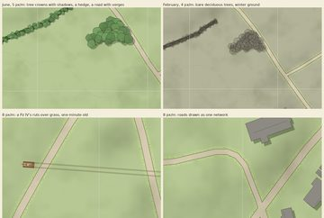
Version 0.24.3 1
Capitals in the sheet's stroke font, and the SET-UP AREA labelBuilt0.24.3
The sheet's stroke font has the capitals A-Z and the hyphen, in the digits' style: straight strokes and cut corners. The first use is the SET-UP AREA label in blue in the north-west corner of the side's first placement area, as in the goal sketch; it shrinks to fit a narrow area and is left out of a tiny one. Later the letters can name villages and woods on the sheet.
Question: How is the set-up area named on the sheet?
Options
✓Hand-lettered capitals in the sheet's own stroke font
Why: As in the goal sketch.
Code
src/sheet.rs: glyphsrc/sheet.rs: squares_label
Open
- Names of villages and woods on the sheet with the same letters.
Pictures

Version 0.23.0 1
The briefing is a map sheet in the style of the warBuilt0.23.0
Built: before the first round the window opens on the briefing as a map sheet in the manner of a British 1:25 000 sheet: paper, a neat line with a margin, the kilometre grid in violet numbered on all four edges outside the frame, faint 100 m squares, woods with tree signs, roads cased in yellow, contours with their heights, a scale bar and a north arrow. The side's overlay is drawn as on talc: its own tanks as blue upright signs with their numbers and a heading arrow, the enemy it was told to expect as a dashed red sign with a question mark. Beside it, on the same paper, the margin: the map's name as the title, the orders, the conventional signs, how to give a map reference (worked out for the side's first tank) and the overlay's signs. A button goes to the map, and Briefing in the plan bar brings the sheet back. The sheet takes no side and nothing of the enemy's real units, so it shows only what the side knows; a test moves the enemy and gets the same picture. The same scenario gives the same PNG (the sheet command writes it). Shown in a game against the computer and with --view allied|axis; not yet for a game on disk or a replay. One sheet style for both sides until a second exists.
Question: What is the map sheet in the style of the war used for?
Options
✓The briefing
The scenario's map and overlay, read before the first round.
Why: Chosen: a bounded step that changes neither the window nor the orders, and it is where the look helps most.
Giving orders on it
The orders drawn on the overlay during play.
Facts
| secondhand | The Soviet convention draws own forces in red and the enemy in blue, the reverse of the Western maps. | from memory, not checked against a source |
| DESIGN_CHOICE | The grid has 100 m squares with the kilometre lines numbered (00, 01, 02 from the map's south-west corner); a map reference is the kilometre number and the tenth, as on the British sheets: tank 1 in the test scenario stands at 009 020. | chat 2026-11-14 |
| DESIGN_CHOICE | The figures on the sheet are drawn as strokes, so they are in the PNG without a font library; the words are drawn only by the window. | chat 2026-11-14 |
| MOCK | All the sheet's colours and sizes are taken from the sketch by eye, not from a real GSGS sheet. | src/sheet.rs, src/draw.rs |
| DESIGN_CHOICE | The title and headings are Noto Serif Bold (SIL OFL 1.1, assets/fonts/OFL.txt). | chat 2026-11-14 |
Code
src/sheet.rs: sheet_itemssrc/sheet.rs: map_referencesrc/gui.rs: sheet_screensrc/main.rs: run_sheet
Open
- The sheet for a game on disk (--side) and for a replay.
- Water, marsh and dense wood are drawn but not yet seen on a map that has them.
Pictures
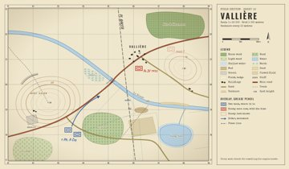
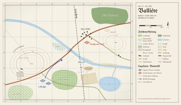
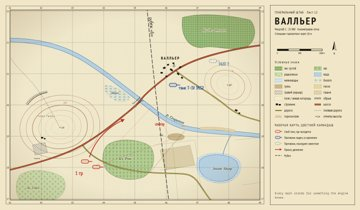
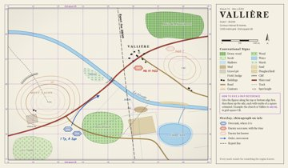
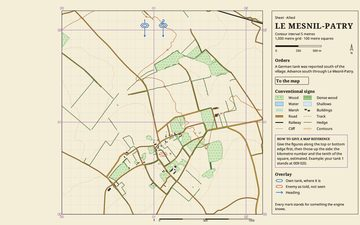
Version 0.22.0 1
The event list shows raw Debug for most eventsBuilt0.22.0
the event list shows readable text instead of the raw Debug form, from the same events-to-text function as the report (report-readable-outcome). Built 2026-11-13: every event has readable text, tagged as story or detail; the list hides details by default (Hide details), the shot picture stays under each shot.
Question: Should the event list get readable text for every event?
Options
✓Readable text from the shared function
One function for the list and the report.
Why: Chosen on 2026-11-11, the recommendation.
Code
src/account.rs: event_linesrc/gui.rs: events_panel
Pictures
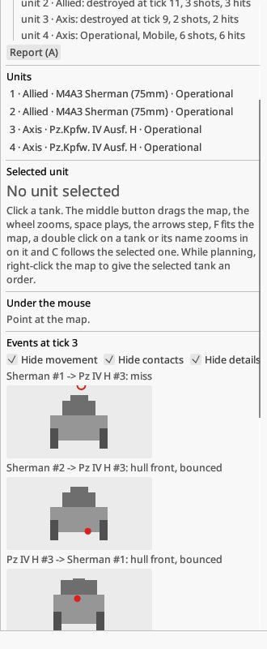
Version 0.14.2 1
A rim round the zoomed-in tank, on and offBuilt0.14.2
A rim in the side's colour round the zoomed-in tank, on by default. B switches it, and the panel has a box for it. The rim is not one of the --layers names. From 0.30.1 the rim is off by default (key B turns it on).
Question: Can the rim round the zoomed-in tank be switched off?
Options
✓On by default, switched with B
A rim in the side's colour round the zoomed-in tank, with a box in the panel.
Why: Chosen: the rim can be switched on and off.
Named in --layers
The rim as one of the --layers names.
Facts
| DESIGN_CHOICE | Not among the --layers names: that list means 'only these on', and would otherwise switch the rim off unasked. | SESSION.md, 0.14.2 |
Code
src/draw.rs: Layers
Version 0.14.1 1
Zoomed-in tanks wear their paint and their nation's markBuilt0.14.1
The model files carry paint (name, colour, source) and a mark (place on the hull, width). Zoomed in, a tank has its own colour, a 0.25 m rim in the side's colour round the hull, and a national mark on the rear deck under the turret: a white star for the United States (0.9 m) and a Balkenkreuz for Germany (0.8 m). The badge and the symbol keep the side's colours. A wreck is grey, with no rim and no mark.
Question: How are the zoomed-in tanks painted?
Options
✓Own paint and a national mark, zoomed in
The paint and the mark show only when zoomed in; the badge and the symbol keep the side's colours.
Why: Chosen: option (b) of the discussion.
Facts
| MOCK | Olive Drab No. 9, FS 33070 or 34087 (disputed). | SESSION.md, paint of the models (no first-hand source found) |
| MOCK | Dunkelgelb RAL 7028, HM 1943 Nr. 181 according to secondary sources; date and shade disputed. | SESSION.md, paint of the models |
| DESIGN_CHOICE | The place and the proportions of the marks. | SESSION.md, marks |
Code
src/topview.rs: Coatsrc/topview.rs: MarkingPlacesrc/draw.rs: mark
Version 0.14.0 1
Colours follow the viewer: own blue, enemies redBuilt0.14.0
In a side's view its own units are blue and enemies are red, whichever side the team is on. The truth view keeps Allied blue and Axis red. Green is reserved for neutral units, none exist yet. Symbols, outlines and paint follow the same rule.
Question: What colour is a unit, when the colours are by side?
Options
✓By the viewer: own blue, enemy red
The colours depend on the team that looks, as NATO's map symbols do.
Why: Chosen: the same picture reads the same for either side.
By the side: Allied blue, Axis red
The colours depend on the side in the scenario, whoever looks.
Facts
| stated | The colours are the same as NATO's map symbols: blue own, red enemy, green neutral. | SESSION.md, the side names and colours (APP-6) |
Code
src/draw.rs: huesrc/draw.rs: Hue
Version 0.13.0 2
Vehicles move smoothly between ticksBuilt0.13.0
Between two ticks a vehicle is drawn on the straight line, turning the short way, with its sectors and its sight and shot lines. The still parts of the picture are kept as a background, and only the moving parts are drawn each frame. A paused picture shows the exact tick.
Question: How is the picture drawn between two ticks?
Options
✓Interpolated in tiny-skia, background kept
The still parts are kept as a picture; the moving parts are drawn each frame, all in tiny-skia.
Why: Chosen: measured first, the kept background is fast enough, so everything stays in tiny-skia.
Hybrid: macroquad draws the moving parts
tiny-skia draws the still parts into a cached texture and macroquad draws vehicles and lines each frame.
Facts
| observed | The kept background takes 0.06 to 0.33 ms per picture without the field of sight, and 7 to 21 ms with it. | SESSION.md, F6c and mjuk rörelse (time_a_frame_of_the_valley, release) |
Code
src/draw.rs: betweensrc/draw.rs: draw_list_betweensrc/png.rs: Layered
A shot zoomed in: the vehicle rocks back, the gun recoilsBuilt0.13.0
Zoomed in, a shot is shown: the vehicle rocks back along the gun, the barrel recoils, a flash lasts 0.15 s, and a grey smoke of three layers grows from 1 to 4 m in 2 s. Zoomed out, the shot is drawn as before, as a line.
Question: How does a shot look when the vehicle is zoomed in?
Options
✓Rock, recoil, flash and smoke when zoomed in
Only the model zoomed in, without the badge.
Why: Chosen: the look that was tried and kept.
Facts
| DESIGN_CHOICE | Flash 0.15 s, smoke 2 s, growing 1 to 4 m. | src/draw.rs FLASH_SECONDS, SMOKE_SECONDS, SMOKE_FROM_M, SMOKE_TO_M |
| DESIGN_CHOICE | The rock lasts 2 s and is damped; about 0.3 m on a Sherman. | src/draw.rs ROCK_SECONDS and the comment at ROCK_SHARE |
| MOCK | Gun recoil 0.3 m, without a source. | SESSION.md, shot look; src/draw.rs RECOIL_M |
Code
src/draw.rs: muzzle_effectssrc/draw.rs: rock_after_shot_m
Version 0.9.1 1
Version 0.8.0 3
A double click on a unit zooms in on itBuilt0.8.0
Two clicks within 0.4 s and 6 px zoom in on the unit to 10 px per metre, if the view shows it. C follows the selected unit; F or dragging the map stops the following. The unit list does the same from 0.9.3.
Question: How is a unit zoomed to?
Options
✓Double click, and C to follow
The double click zooms; C follows the selected unit.
Why: Chosen: a double click zooms in on the unit, and the follow key keeps it in view.
Facts
| DESIGN_CHOICE | Two clicks within 0.4 s and 6 px make a double click. | src/gui/camera.rs DOUBLE_CLICK_S, DOUBLE_CLICK_PX |
Code
src/gui/camera.rs: DoubleClicksrc/gui/camera.rs: toggle_follow
Vehicles drawn from above when zoomed in, a badge when zoomed outBuilt0.8.0
Zoomed in, each vehicle is drawn from above at true size, with the hull facing its heading and the turret turning on its own axis. Zoomed out, a badge on a stick replaces the NATO symbol, with the vehicle drawn small inside it. The PNG keeps the old triangle symbol.
Question: How is a vehicle drawn at each zoom level?
Options
✓Model zoomed in, badge zoomed out
The model at true size from a zoom of 3 px per metre, the badge below it.
Why: Chosen: a tank drawn at its size when zoomed in, and a badge that reads at a distance.
NATO symbols for single vehicles
A NATO symbol for each vehicle, which does not show its direction.
Facts
| DESIGN_CHOICE | The switch is at 3 px per metre. | src/gui.rs MODEL_FROM_PX_PER_M |
| DESIGN_CHOICE | The badge is 30 px on its stick. | src/gui.rs BADGE_PX |
| DESIGN_CHOICE | The models are polygons in metres, not pictures, so the scale is right by construction. | SESSION.md, ovanifrånmodeller steg 1 |
Code
src/draw.rs: vehicle_from_abovesrc/draw.rs: badge_centresrc/gui.rs: look_at
Vehicle models are data files checked against the vehicleBuilt0.8.0
A vehicle model is a JSON file of polygons in metres, with two sections: the hull and the turret. topview::parse_topview checks the format, and TopView::fit checks the model against the vehicle's measures: size within 3 per cent, the hull and turret centred, the track width within 5 cm, the cupola and the gun. Every fault is reported at once. Two models exist: the Panzer IV H and the Sherman M4A3 75 mm.
Question: How is the top view of a vehicle described?
Options
✓Polygons in metres, in a data file
A file per vehicle, checked when it is read.
Why: Chosen: the scale is right by construction, and a new vehicle becomes a new file.
Pictures
Bitmap pictures of the vehicles.
Facts
| DESIGN_CHOICE | At most 25 polygons, 3 to 12 points each. | src/topview.rs MAX_POLYGONS, MAX_POINTS |
| DESIGN_CHOICE | Tolerances: size 3 per cent, centring 5 cm, track width 5 cm, cupola 25 per cent. The limits are design choices. | src/topview.rs SIZE_TOLERANCE, CENTRE_TOLERANCE_M, TRACK_WIDTH_TOLERANCE_M, CUPOLA_TOLERANCE |
Code
src/topview.rs: parse_topviewsrc/topview.rs: TopViewsrc/topview.rs: SHIPPEDsrc/topview.rs: turret_axis_y
Version 0.2.0 1
How sight is drawn: strip, three greens, LOS lineBuilt0.2.0
In the window the field of sight follows the LOS function and shows its depth as a strip along the edge of the cover. The map gets three green shades, with patterns so that they can be told apart without colour. The line of sight in the LOS layer is drawn differently through forest, and stops where the sight budget runs out.
Question: How is sight shown on the map?
Options
✓Strip, three greens with patterns, LOS line through forest
The field of sight shows its depth as a strip along the edge; the forest has three green shades with patterns; the LOS line through forest is drawn differently.
Why: Chosen: the shades can be told apart also without colour.
Facts
| stated | Where forests overlap, only the densest counts for sight depth, so no metre is counted twice. | SESSION.md, Beslut och skälen, F6b · Framkomlighet och vägval (2026-10-31). |
Code
src/draw.rs: LOS_GREENsrc/draw.rs: sight_linessrc/terrain.rs: forest_sight
Version 0.1.0-pre (before versions were noted) 19
The picture is a list of shapes made from dataBuilt0.1.0-pre
The picture is first a list of shapes in metres (polygons and lines), each with a style that says what it shows: terrain, grid, unit, destroyed unit, turret, route, shot hit or miss. The list is built from the map, the units and the tick's snapshot, and nothing is drawn that the engine did not report. The window and the PNG draw the same list.
Question: How is the picture made: drawn straight to the screen, or first as a list of data that a renderer draws?
Options
✓A list of data, drawn by a renderer
Shapes in metres with a semantic style, drawn by tiny-skia for PNG and for the window.
Why: Chosen: the list is tested as data with ordinary tests, and the same picture can be seen as a PNG without a window.
Drawn straight to the screen
The window draws its own shapes without an intermediate list.
Facts
| stated | The style says what a shape shows, so a pixel renderer can change its look without the list changing. | SESSION.md, F2 ("Ritlistan är enkla former med stil") |
| stated | Items are drawn in list order: terrain, grid, routes, shots, vehicles, turrets. | SESSION.md, F2 (målarordning) |
| DESIGN_CHOICE | Unit symbol 20 m across. | src/draw.rs UNIT_SYMBOL_M |
| DESIGN_CHOICE | Grid line every 100 m. | src/draw.rs GRID_STEP_M |
Code
src/draw.rs: draw_listsrc/draw.rs: Shapesrc/draw.rs: Stylesrc/draw.rs: paint
The PNG is drawn by tiny-skia, without a windowBuilt0.1.0-pre
tiny-skia draws the list to PNG bytes, with no GPU and no window. The library writes no file; the command line does. The PNG has no text, because tiny-skia has no fonts. Text comes in the window.
Question: How is a picture made without a window?
Options
✓tiny-skia, no text
A picture is rendered to bytes; the caller decides where it goes. Text is left to the window.
Why: Chosen: the picture must come without a window or a GPU, and tiny-skia has no fonts.
Facts
| DESIGN_CHOICE | Picture width 1024 px by default; the same seed gives the same PNG byte for byte. | SESSION.md, F2 and src/png.rs |
| stated | The command line writes --png <tick> or --png every:n into out/png/. | SESSION.md, F2 |
Code
src/png.rs: render_pngsrc/png.rs: render_rgba
The window shows the map from the PNG rendererBuilt0.1.0-pre
The map in the window is drawn by the same tiny-skia renderer as the PNGs and shown as a texture. macroquad draws the text and the markings on top. The window and the picture cannot drift apart.
Question: Who draws the map in the window: the shared renderer, or macroquad itself?
Options
✓The shared renderer
tiny-skia draws the map to a texture; macroquad draws text and markings over it.
Why: Chosen: window and picture cannot drift apart, and concave polygons need no triangulation. The cost is CPU drawing whenever the tick, the camera or the size changes.
macroquad draws the map
The window draws its own shapes with macroquad.
Facts
| stated | The cost: CPU drawing whenever the tick, the camera or the window size changes. | SESSION.md, F3 (designval) |
Code
src/png.rs: render_rgbasrc/png.rs: View
macroquad for the window, egui for the panelsBuilt0.1.0-pre
The window is macroquad 0.4 with egui-macroquad 0.17 (egui 0.31) for the panels, built without sound so that no system libraries are needed. It is a subcommand of the same program (cargo run -- gui <scenario>); the library knows nothing about windows.
Question: How are the panels made: egui, or macroquad's own simple buttons?
Options
✓egui for the panels
egui-macroquad 0.17, which lags behind the newest egui release.
Why: Chosen: egui is used for the panels, and a reserve path (eframe) is kept in mind.
macroquad's own buttons
Simple buttons drawn with macroquad only.
Facts
| stated | The window starts as a subcommand of the same binary, not as a separate program. | SESSION.md, F3 |
Code
src/gui.rs: runsrc/gui.rs: GuiStart
The window's text is in EnglishBuilt0.1.0-pre
All text in the window is English: labels, panels, menus and hints. Comments and documents stayed in Swedish at the time.
Question: Which language is the window's text in?
Options
✓English
All window text in English.
Why: Chosen: the window is in English throughout.
Facts
| stated | Order steps are shown with the words of the order file, for example 'move fast to (350, 640)'. | SESSION.md, F3 |
Code
src/gui.rs: run
The window plays back a recording, live or from fileBuilt0.1.0-pre
The window takes only a Recording: a run started in the window and a run replayed with gui --replay <file> show the same pictures, byte for byte. The recording is JSONL: a header (format, version, scenario, orders, seed, rounds, the map and one entry per unit) and one line per tick. It is written by default to out/runs/ unless --no-record is given.
Question: In what format is a run recorded so that the window can play it back?
Options
✓JSONL recording, written by default
One line per tick, with the map inside the header.
Why: Chosen: one format for runs, readable for people and for tools such as grep and jq, with no schema and no build step.
A binary format
A binary encoding such as protobuf.
Facts
| stated | The gzip option is for large files; the format stays JSON. | MILESTONES.md, F3 (Inspelningsformatet) |
| stated | Same run, same screenshots: a window run and a --replay of the same file give identical pictures. | SESSION.md, F3 (Facit) |
Code
src/recording.rs: Recordingsrc/gui.rs: run
The browser viewer is removed; the window is the toolBuilt0.1.0-pre
The browser viewer (tools/viewer/) was frozen on 2026-10-27 and removed when the window had its features: the fields of sight, the line-of-sight area and the measuring tool. The recording is the project's only format.
Question: What happens to the browser viewer once the window has its features?
Options
✓Removed
tools/viewer/, export.rs and the writing to out/tests/ are deleted in one commit.
Why: Chosen: the window is the future, so the viewer is removed when the window has its features.
Facts
| stated | Removed: tools/viewer/, export.rs and the writing to out/tests/. | SESSION.md, F3c step 3b |
Code
src/recording.rs: Recording
Map layers can be switched on and offBuilt0.1.0-pre
The map layers are the fields of sight, the line-of-sight area of the selected unit, the tracks and the sight lines. By default only the routes are drawn, which is the picture of F2. --layers chooses layers by name. The measuring tool (M and drag) gives metres and compass bearing.
Question: Which layers are on at start?
Options
✓Only the routes at start
The other layers are switched on by key or by --layers.
Why: Chosen: the default picture stays the F2 picture.
Facts
| DESIGN_CHOICE | The fields of sight are drawn 200 m out from the tower. | SESSION.md, F3c step 1 and src/draw.rs VISION_RADIUS_M |
Code
src/draw.rs: Layerssrc/gui/camera.rs: measure
The team view draws what the side knowsBuilt0.1.0-pre
Three views, switched with keys 1, 2 and 3: the truth, the blue team and the red team. In a team's view, its own units are drawn as they are, the enemies it has seen are drawn, and enemies it saw earlier are drawn as ghosts that fade out. An enemy seen only by teammates is drawn indirectly for the selected unit.
Question: What does a side see on the map?
Options
✓Its own knowledge, with ghosts
The contacts of the team: seen now, or remembered where it was last seen.
Why: Chosen: each team sees what its contacts say, with the same rules as the knowledge of the side.
Facts
| MOCK | Ghosts fade out over CONTACT_FORGET_TICKS, 30 ticks. | SESSION.md, F3c step 2 and src/engine.rs CONTACT_FORGET_TICKS |
Code
src/draw.rs: DrawOptionssrc/draw.rs: hue
The outcome of a run is shown in the truth view onlyBuilt0.1.0-pre
A collapsed panel shows the outcome of the whole run. It is shown only in the truth view, since it is the answer key.
Question: Where is the outcome of the run shown?
Options
✓Only in the truth view
The outcome panel is hidden in the team views.
Why: Chosen: it is the answer key, so it is shown only in the truth view.
Code
src/gui.rs: outcome_panel
Mouse and camera: zoom at the pointer, left selects, right opens the order menuBuilt0.1.0-pre
The wheel zooms around the pointer; the middle button pans; a left click selects a unit. A right click opens the order menu. The timeline has play, pause, step, drag and speed. The M key and a drag measure distance and compass bearing.
Question: Which mouse button does what?
Options
✓Left selects, middle pans, right opens the order menu
The right button no longer pans.
Why: Chosen: the order menu opens on the right button, so the right button does not pan any more.
Right button pans
The first version: pan with the right or middle button, left selects.
Code
src/gui/camera.rs: Camerasrc/gui/camera.rs: measuresrc/gui.rs: order_menu
The order editor: a menu at the click, the target set by a clickBuilt0.1.0-pre
A right click opens the order menu where the pointer is. Move takes a speed first; the next left click on the map sets the target, and a dashed line follows the pointer until then. Hatch and Wait are added at once. The target of the selected unit is shown as rings that can be dragged, and the battle is run again when the ring is released. A new order always goes last in the queue.
Question: How are orders given in the window?
Options
✓Menu at the click, then the target
Move takes a speed, then a click sets the target; the rings can be dragged.
Why: Chosen: the menu opens where the click is, and Move asks for the speed before the target.
Facts
| DESIGN_CHOICE | A waypoint can be grabbed within 10 px. | src/gui/camera.rs WAYPOINT_REACH_PX |
Code
src/gui.rs: order_menusrc/gui/camera.rs: waypoint_atsrc/gui/camera.rs: WAYPOINT_REACH_PX
The panels use Noto Sans RegularBuilt0.1.0-pre
The panels use Noto Sans Regular, built into the binary. The egui default, Ubuntu Light, was thin and pale on the display where it was tested, at about 89 dpi with no hinting. Five variants were compared as pictures; the chosen one keeps the size and colour of before.
Question: Which font do the panels use?
Options
✓Noto Sans Regular, same size and colour
Noto Sans Regular in the same size and colour as before.
Why: Chosen: the same size and colour as before, with a font that is less pale on the display.
Facts
| stated | The font is SIL Open Font License 1.1, included as assets/fonts/OFL.txt. | SESSION.md, panelernas typsnitt |
Code
src/gui.rs: use_noto_sanssrc/gui.rs: NOTO_SANS
The selected unit is shown in a side panel, not a popupBuilt0.1.0-pre
The selected unit is shown in a side panel, not a popup. The panel shows only while a unit is selected, and it is a list of labels and values, so that new fields of the snapshot become new rows.
Question: How is the selected unit shown: in a popup, or in a side panel?
Options
✓Side panel
A panel beside the map, shown only while a unit is selected.
Why: Chosen: a side panel in preference to a popup.
Popup
A popup over the map.
Code
src/gui.rs: unit_panel
The sight area is drawn for the selected unit onlyBuilt0.1.0-pre
The line-of-sight area is drawn for the selected unit only: a shaded polygon over what it can see across the terrain, with shadows behind forest, buildings and hills. The engine counts it with 72 rays, one every 5 degrees, a 20 m step and a range of 2000 m. The target height is the unit's own silhouette height, a simplification that was accepted. Line of sight for all pairs at once was not wanted.
Question: Which line-of-sight picture is drawn: for all pairs, or for the selected unit?
Options
✓Selected unit only
A shaded area over what the selected unit can see across the terrain.
Why: Chosen: per unit is enough; line of sight for all pairs is not interesting.
All pairs
Line of sight for all pairs of units at once, as an overlay.
Facts
| stated | 72 rays, one every 5 degrees; a 20 m step out to the range of 2000 m. | SESSION.md, Beslut och skälen, Synfältsytan (viewshed) för den valda enheten (2026-10-25). |
| stated | The target height is the unit's own silhouette height, a stated simplification. | SESSION.md, Beslut och skälen, Synfältsytan (viewshed) för den valda enheten (2026-10-25). |
| observed | On the real map the LOS area stalled the window: from the village a new place took 3.0 s, as every step of every ray was tried against all of the map's features. Since 0.26.0 the features near each ray are sifted out once and the rays run in parallel (rayon): 0.12 s sifted, 11 ms on 24 cores, bit for bit the same area (a test compares it with the unsifted one from 7 places). | src/terrain.rs viewshed, test the_viewshed_is_the_same_as_the_unsifted_on_le_mesnil_patry |
Code
src/terrain.rs: visible_distance_by_bearingsrc/terrain.rs: ViewshedGridsrc/draw.rs: los_areasrc/rules.rs: SPOTTING_RANGE_M
One debug mode: everything visible, all units take ordersBuilt0.1.0-pre
One mode for work in the window: everything is visible and all units take orders. End turn runs the orders of both sides, and the playback is shown in the truth; then the window goes back to planning. The views 1, 2 and 3 are kept for debugging.
Question: Which mode does the window have in planning?
Options
✓One debug mode
Everything visible, all units take orders; End turn runs both sides.
Why: Chosen: one mode in F4. Hot seat is not built.
Hot seat
Two players take turns on the same screen.
Code
src/gui.rs: end_turnsrc/gui.rs: app
The window starts with empty queuesBuilt0.1.0-pre
The window starts with empty queues. gui <scenario> --orders <file> gives a start draft instead. The order file is the protocol between player and engine, not a debug file.
Question: What does the window start with: empty queues, or an order file?
Options
✓Empty queues
The window starts with empty queues; --orders <file> gives a start draft.
Why: Decided 2026-10-29. A scenario is the setup; the orders are the player's intent.
An order file as the start
Planning opens with an existing order file.
Facts
| stated | The default file test_orders/<scenario>.json belongs to the tests and is read only by the CLI without gui. | SESSION.md, Beslut och skälen, F4 · Ge ordrar, runda för runda (2026-10-29). |
Code
src/files.rs: OrdersFromsrc/files.rs: prepare
Shift keeps the target choice after a placed MoveBuilt0.1.0-pre
Holding Shift after a placed Move keeps the target choice, so that a route can be clicked out in one sweep. Without Shift, the target choice ends as before.
Question: Does the target choice stay after a placed Move?
Options
✓Shift keeps the target choice
With Shift held at the click, the target choice stays, so a route is clicked out in one sweep.
Why: Wanted, so that a route is clicked out in one sweep.
As before
The target choice ends after each Move.
Code
src/gui.rs: app
The button is called End replayBuilt0.1.0-pre
The button 'Back to planning' was renamed End replay, because the old name was hard to understand. At the end of a game the timeline says 'Game over' and the outcome box opens.
Question: What is the button that ends the replay called?
Options
✓End replay
The button ends the replay and goes back to planning.
Why: Chosen: 'back to planning' was hard to understand.
Back to planning
The earlier name.
Code
src/gui.rs: timeline
Parked 2
Reserve: eframe if egui-macroquad becomes a hindranceParked
egui-macroquad lags behind the newest egui release. If it becomes a hindrance, eframe, egui's own window shell, is the reserve path. Nothing is decided.
Code
src/gui.rs: run
--png is not implemented for 'all' and for seed sweepsParked
Parked on 2026-11-11: --png works for single runs only, not for run_all or seed sweeps. Nothing needs it yet.
Question: Should --png work for 'all' scenarios and for seed sweeps?
Open
- Taken up when a sweep's pictures are wanted.
Rejected 4
Bevy rejected as the frameworkRejected
Bevy was rejected as the window's framework. Its ECS clashes with the engine's own loop: it would be either only a draw layer or a rewrite of the core. It is heavy, changes its API about every third month and has an immature UI of its own. macroquad was chosen instead. The rule against heavy frameworks was softened for the window, but the Bevy class is still a no.
Question: Which framework does the window use?
Options
Bevy
—
✓macroquad
—
Facts
| stated | Bevy is heavy, changes its API about every third month and has an immature UI of its own. | SESSION.md, Beslut och skälen, Bortvalt: Bevy. |
raylib-rs rejected as the frameworkRejected
raylib-rs was rejected because it needs a C build. macroquad is its counterpart in pure Rust.
Question: Which framework does the window use?
Options
raylib-rs
—
✓macroquad
—
Facts
| stated | raylib-rs needs a C build. | SESSION.md, Beslut och skälen, Bortvalt: Bevy. |
The web route (local server and browser viewer) droppedRejected
The first proposal was a local server with the browser viewer as the gui. It was dropped in favour of one language and one binary, and of more Rust to learn. A native window was chosen.
Question: Is the gui a browser page or a native window?
Options
Local server and browser viewer
—
✓A native window
—
No web page as the windowRejected
The window is not a web page in an Electron-like shell, though the engine already has an HTTP server: it stays one program in Rust.
Question: Could the window be a web page talking to the engine?
Options
A web page in a browser shell
Why: Rejected 2026-11-15, as on 2026-10-27 (one language and one program).
Next (4)
A more graphic picture, still from aboveIdea
The rule: every effect shows something the engine knows, so the picture never lies about the battle. The ground: forest as tree crowns with small shadows (placed from a seed, the same every time), fields with furrows, roads with verges, shorelines, one sun for the relief and the shadows of forest, houses and tanks. The tanks: track marks that stay and fade (deeper in mud), dust behind a fast tank (the spotting rule already counts it), burning wrecks with smoke, the crew bailing out. The shots: tracers with the round's own flight time, sparks and ricochets on a bounce, the hit marked on its part, drifting smoke once smoke is fired. The fog of war: what no own tank sees is paler, last-known enemies as fading ghosts. The frame: a scale bar, a north arrow, a staff-map border. Built so far: the ground in ink and wash with tree crowns, shadows from the relief's sun, roads with verges and fading ruts (gui-ground-ink-and-wash, 0.25.0, G3), each field its own tone, pattern and direction (gui-field-look, 0.31.0, G6), on the GPU (gui-gpu-map-rendering, 0.29.1). What is left, the battle's effects, the fog and the frame, is G7.
Facts
| DESIGN_CHOICE | Style chosen 2026-11-14 from a proposal sheet (_tmp/g3_proposal_ground.png): 'hand-drawn' ink and wash, crowns as uneven ink-outlined blobs with a wash and a little hatching on the shadow side, verges with grass ticks, slightly wavering furrows, matching the briefing sheet; drawn as SVG/procedural strokes by us, no bought art. Over a clean generated style. | chat 2026-11-14 |
| DESIGN_CHOICE | Fields vary so the patchwork looks alive, not to match the air photograph: per field, seeded by its id, a tone a little lighter or darker, yellower or greener within a narrow band, one of a few patterns (plain, drilled rows, stubble, mown bands) in the ink-and-wash style, and a direction along the field's longest edge with a little randomness. The variation stays clearly inside 'field' and never resembles mud, marsh or ploughed ground, which the engine treats differently. No engine change. | chat 2026-11-14 |
| DESIGN_CHOICE | Zoomed in, a tank's trail is drawn as in panel 3 of the goal sketch (docs/tacai_img/goal-zoom-sheet-to-ground__0.20.7.jpg): two faint parallel ruts in the ground at the vehicle's track width, dotted like pressed earth, fading with age, instead of today's coloured trail line. The trail stays what the engine recorded (the positions), only its look changes. | chat 2026-11-14 |
| DESIGN_CHOICE | Style confirmed 2026-11-14 after mock-ups of four styles (painted, ink and wash, watercolour, engraving) in four months around Le Mesnil-Patry (_tmp/g3_mock_styles_months.png): ink and wash. It is the cheapest on the CPU (flat fills, ink lines, no blur), it passes naturally into the paper-and-ink map sheet in G4, and the tanks stand out on the pale ground. | chat 2026-11-14 |
| DESIGN_CHOICE | The detail shows from the zoom where the tanks switch from badge to model (3 px/m), is in the PNG from the same draw list, and dense forest and forest are filled completely by crowns; only light forest is sparse. | chat 2026-11-14 |
| DESIGN_CHOICE | The ground's colour shows what the engine knows: each surface kind (open ground, field, ploughed, mud, marsh, sand, gravel) has its own colour range that does not overlap the others; the scenario's month (its date, June when it has none) moves the whole palette, a little more clearly than in the first mock-up (_tmp/g3_mock_ink_months.png, lower row); deciduous trees and hedges follow the month and are bare in winter. The ground has a fine mottle fixed to the world and seeded. Variation per field is G6. | chat 2026-11-14 |
| observed | The ground's part was built in G3 (gui-ground-ink-and-wash, 0.25.0): ink and wash, the palette per surface kind and month, crowns, hedges, roofs, verges and ruts. The fields stay for G6 and the battle's effects for G7. | data/milestones.json G3 |
decision: Zoomed in, the ground is drawn in ink and washdecision: Each field its own tone, pattern and directiondecision: The map drawn on the GPU with macroquad meshes
The ground alive, in the game's own styleIdea
Zoomed in, the ground looks more alive without leaving the game's style (the map sheet fading into ink and wash): the hand's traces (a grain in the wash, edges where the wash gathers, lines a little uneven), small signs rather than detail (a few tufts at the hedges' feet, a dot for a stone, posts for a gate), the story in the ground (trodden yards, a path across a field to the gate, worn ground at a gateway), and the light (shadows the same way everywhere, a little clearer). Low limestone walls round yards and gardens, fences, gravel drives, roofs of the time and place. Drawn from the map's own sources it becomes less straight and less clean than any mock. The rules: vector at every zoom, never a pixel style; every mark shows something true, from the engine or from a source (the gates fields.py found, the farms, the month); the map stays readable for the battle (hedges, woods and open ground at a glance). The battle's own traces (craters, smoke, ruins, wrecks) belong to G7.
Next step: the grain and the tufts first (the most life for the least work, and true everywhere), then the yards and the paths from the farms and the gates; each tried as a sketch before it is built.
decision: Each field its own tone, pattern and directiondecision: Zoom from the map sheet down to the ground
Pictures
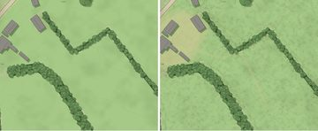

Drawn arrows on the map, as in the first sketchIdea
The orders and routes on the map drawn as arrows a hand would draw, as in the first goal sketch: a solid stroke in chinagraph or grease pencil, a little uneven in width, curved, with a drawn arrowhead, instead of the thin dashed lines of today. On the sheet the pencil of the briefing; zoomed in the same stroke, fainter, so it reads over the ground.
Facts
| observed | Today a route is a thin line (Style::Route, 1.5 px, muted). | src/draw.rs paint, 2026-11-16 |
decision: Zoom from the map sheet down to the ground
Pictures
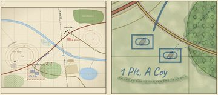
Later (5)
A vehicle database in the gameIdea
The vehicle data, which the binary already carries, shown in the game: a Vehicles button in the start menu with a page per vehicle (armour plate by plate, the gun's rounds and its penetration as a curve, mobility, the top view), and the same page from a selected unit in battle. A Sources toggle shows the kind, source and note beside each value, never the page. Later a comparison: can this round go through that plate at this range, computed by the engine's own rules. After F7.
An enemy's status as the surest own tank sees itIdea
Selecting an enemy shows his status not as the truth and not as nothing, but as the own tank with the surest or freshest picture of him knows it: seen or remembered, how long ago, the damage signs seen, the assessment. The engine already keeps this per tank (the contacts and the assessment); the window would pick the tank that knows best and say which one it is.
Free models for trees, bushes and moreIdea
Once the ground's detail is drawn as sprites on the GPU, the pictures behind the sprites can come from files instead of being drawn by the program: free sets (CC0, such as Kenney's or OpenGameArt's) would give several kinds of trees, bushes, houses and other things. To weigh then: the licence (CC0 is simplest, CC-BY needs a credit) and the style (the window's ink and wash; ready-made pictures have a style of their own and may need choosing or tinting).
A way of working: the mesh is made or adjusted in Blender (or a free CC0 model is taken); a script reads the window's palette (src/detail.rs: every colour once, by month), gives the parts their colours, puts the sun in the north-west as the relief's, draws ink outlines with Freestyle and renders from straight above to PNGs with a transparent background, in several sizes and seasons; the game reads them through the sprite atlas. First trial: one tree beside today's crowns. A third way: sprites drawn as design sketches in the window's own style and palette, seen from straight above by construction and free of licences, as the goal sketch's panel 3 already shows (crowns, hedge bushes, a gravel road). Trial: a sprite sheet of six crowns, two hedge bushes and two roofs, beside one tree rendered in Blender.
Facts
| secondhand | Kenney Nature Kit: "Creative Commons CC0", 330 files of trees, rocks and foliage, 3D, to render from above. | https://kenney.nl/assets/nature-kit, read 2026-11-15 |
| secondhand | Quaternius Textured LowPoly Trees: "Creative Commons Zero v1.0 Universal", 45 trees and 18 leaf and bark textures, FBX, OBJ and Blend. | https://quaternius.itch.io/textured-lowpoly-trees, read 2026-11-15 |
| secondhand | KayKit Forest Nature Pack calls itself CC0 but adds "please don't resell unmodified copies or claim them as your own"; Quaternius' Stylized Nature MegaKit is CC0 for its free part only (about 60-70 %). | https://kaylousberg.itch.io/kaykit-forest, https://quaternius.com/packs/stylizednaturemegakit.html, read 2026-11-15 |
| secondhand | No CC0 farmhouse or barn was found; the oaks seen on Sketchfab were CC BY. Kenney's 2D sprites seen were side-on or pixel tiles, not seen from straight above. | a search of the sources, 2026-11-15 |
| stated | Poly Haven: "Our assets are all licensed as CC0"; "You do not need to give credit or attribution when using them"; "You can redistribute them, share them around, include them when sharing your own work". Not CC0: the site's logos, text and "Asset example renders". The site's terms forbid "Web scraping or data mining without express permission"; the public API has its own terms. | https://polyhaven.com/license, read 2026-11-15 |
| secondhand | ambientCG: "All ambientCG assets are provided under the Creative Commons CC0 1.0 Universal License." | https://docs.ambientcg.com/license, read 2026-11-15 |
| secondhand | Quixel announced on 5 November 2026 that the whole Megascans library (about 23 000 scanned models, surfaces and plants) is free on Fab, under the Fab Standard License, not CC0. Several outlets call it permanent; Quixel's own post does not say so. | https://quixel.com/news/update-megascans-are-going-free-again; https://80.lv/articles/entire-quixel-megascans-library-now-available-for-free, read 2026-11-15 |
More gritQuestion
Open, kept as a thought: the ground may want more grit than the clean ink and wash of today, worn, muddy, marked by use and by the war, still in the game's own style. What grit means here, and how much, is not settled. A first answer (2026-11-16): the grit may belong to the replay rather than to the game (gui-replay-immersion).
The replay grittier than the gameIdea
Two presentations of the same battle: while playing, the ground stays at the calm, readable level of the living ground (gui-ground-alive), since the game is a simulation and the player decides from the map; a loaded replay is for watching and may be grittier and dirtier, closer to how it was: the screen shaking at a hit near the view, smoke and dust that linger, a dirtier tone. Every effect still comes from the engine (a shake from a real hit, smoke from a real wreck); only the presentation differs. Thoughts for now.
Maybe (5)
A pixel look, laterIdea
The picture's style is semantic, so a pixel-style renderer could come later without the draw list changing.
Noted for the future as the look of the window. Nothing is planned for it yet.
decision: The picture is a list of shapes made from datadecision: The PNG is drawn by tiny-skia, without a window
A quicker way to start the windowIdea
Starting the window means typing a long cargo command. A cargo alias or cargo install would make it shorter; neither is done.
The options noted are a cargo alias in .cargo/config.toml, or cargo install --path .
Facts
| stated | Not done: the cargo alias and cargo install. | SESSION.md, F3 |
A perception map: the sight area combined with the vision wedgesIdea
Combine the sight area with the vision wedges into a perception map, and show how an enemy sees the selected unit.
Not built. The idea also covers showing where units are seen from the point of view of a selected enemy, that is how one's own units are seen by it.
decision: The sight area is drawn for the selected unit only
A test: generated models (Meshy, Ludo, Recraft) for the top viewIdea
A test of whether a generated 3D model can give the vehicles' top view. Meshy (an AI service) was asked for a Sherman M4A3 from June 1942 to September 1943. It first made a concept picture of its own, three quarters from the front, and then built a textured 3D model from that one picture (about 4.4 million triangles). What the picture does not show (the engine deck, the rear, the turret roof, exactly what a view from above shows most of) the model guesses, and its measures have no source. Two ways from 3D to 2D: render it from straight above and trace the outlines into polygons in today's format (gui-topview-models, checked against the vehicle's measures as now), or render it from above with light and shade into pictures, the hull and the turret apart (a new format and a decision of its own, close to gui-more-graphic-2d; the turret must first be cut from the hull, since the model is one piece). A second service, Ludo, was tried next: its picture was not a Sherman but a made-up tank (large road wheels of different sizes without the VVSS bogies, a low hull with sloped sides, a small conical turret too far forward), again seen three quarters from the front. Meshy came much closer. A third, Recraft, makes only 2D (pictures and vector graphics, no meshes): its pictures three quarters from the front and from the side were the closest to a Sherman so far (three VVSS bogies a side, the sprocket at the front, a rounded turret), and the side view could serve as a drawing. Asked for a flat view from straight above it gave one, but with the proportions wrong; asked for the turret alone it drew whole tanks again. A view from above in vector form would lie close to today's polygon format, scaled to the measures and checked by TopView::fit. A question raised by the test: whether the source should be a 3D model edited by hand in Blender rather than a generated picture. A model scaled to the vehicle's measures, with the turret as an object of its own, gives every view from one source (the top view, a side view for the codex), can be corrected where the generator guessed, and is rendered from straight above with orthographic camera, no shadow and no marks. Against: a generated mesh is one fused piece with millions of triangles, so it must be reduced and the turret cut free by hand, and the guessed details still need drawings. The recommendation: 3D in Blender as the source, traced to polygons in today's format first, so the program does not change until pictures are decided. The test ended on 2026-11-13: none of the three services gave a model good enough to use, and they are not used further. The question of Blender as the source stays open.
Facts
| observed | The 3D model was built from one generated picture, seen three quarters from the front; the parts it does not show are guessed. | Meshy's own steps in its chat (picture, then picture to 3D), screenshots 2026-11-13 |
| observed | The model has about 4.4 million triangles and 2.4 million vertices. | Meshy's viewer, screenshot 2026-11-13 |
| secondhand | The round part on the turret looks like a vision cupola, which as far as known came later than the period asked for (the early M4A3 had a split hatch). Not checked against a source. | by eye from the screenshot; to be checked |
| observed | The markings (U.S.A. and the registration number) are invented by the service. | screenshot 2026-11-13 |
| observed | Ludo's picture shows no Sherman: five to six large road wheels of different sizes instead of three VVSS bogies per side, a low hull with sloped sides, a small conical turret placed far forward, seen three quarters from the front. The prompt used is not noted. | screenshot of Ludo 2026-11-13 |
| observed | Recraft's first view from above, measured by eye in pixels: the tracks about 16 per cent of the width (the vehicle: 0.41 of 2.62 m, also about 16), length about 2.0 times the width (the vehicle: 2.25), the turret about 2.1 m wide (the data: 1.85, MOCK) and about 2.5 m back from the nose (the data: 2.9), the gun reaching far past the nose (the vehicle's file: the 75 mm gun does not reach past the nose). | screenshot of Recraft 2026-11-13; vehicles/sherman_m4a3_75mm.toml |
| observed | Asked for the turret alone, Recraft drew a whole tank, then the turret from the side and from above turned sideways; its own reasoning noted the gun too long and the hull too narrow. | screenshots of Recraft 2026-11-13 |
decision: Vehicle models are data files checked against the vehicle
Other ways to draw the window, to look at laterIdea
Looked at for G4 and kept for later, not rejected: Skia through skia-safe (one canvas for the window on GL and the PNGs on raster), eframe (egui's own window, the map as a GPU paint callback on wgpu or glow) and Bevy as a draw layer only, with the engine kept as a library. Vello's GPU renderer (vello_gpu) was early and needs wgpu, which macroquad does not use.
Taken up again if macroquad's meshes or egui-macroquad hold G4 back, or if the game wants 3D or far larger maps.
Facts
| observed | Skia spike on the same ground: skia-safe 0.157 with prebuilt binaries, 5 MB larger program; Skia drew with GL in macroquad's window with the GL state saved and restored by hand; on raster the same drawing code differed from tiny-skia in 0.14 % of the pixels and took 2.8 ms against 5.4 ms. Measured only on software GL in the container. | src/gui/skia_spike.rs on the branch g4-gpu-spike, 2026-11-15 |
| secondhand | Vello CPU 0.4.0 is called broadly usable; Vello GPU 0.4.0 (formerly vello_hybrid) is in its early stages without API stability and needs wgpu. | github.com/linebender/vello/releases, docs.rs/vello_cpu, 2026-11-15 |
decision: Bevy rejected as the frameworkdecision: No web page as the window
Pictures
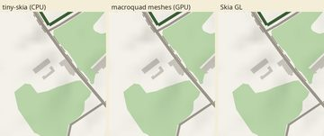
No model yet (docs/tacai_model.json).
No model yet (docs/tacai_model.json).